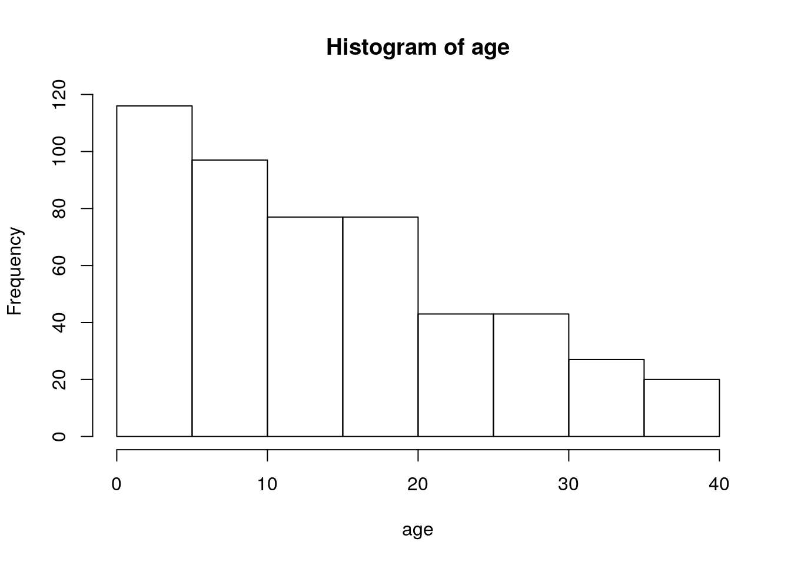
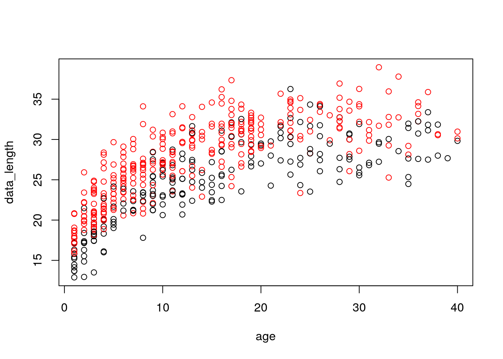

Simulation données Growth
Marie-Pierre Etienne
September 16, 2018
simulation données age taille par sexe
K <- c(0.1, 0.11)
Linf <- c(30,33)
t0 <- c(-6, -7)
## age range
age_max <- 40
age <- 1 : age_max
## von B
plot(age, Linf[1] * (1 - exp(-K[1] * (age - t0[1]) )), 'l', col=2 )
lines(age, Linf[2] * (1 - exp(-K[2] * (age - t0[2]) )), 'l', col=3 )n <- 500
proba <- 1 / (1+ exp(0.1*(age-20)))
plot(age, proba /sum(proba))age <- sample(1:age_max, size = n, replace = TRUE, prob = proba/sum(proba))
hist(age)
sexe <- sample(1 : 2, size = n, replace = TRUE, prob =c(.4, .6))
##
s <- 0.1
data_length <- Linf[sexe] * (1 - exp(-K[sexe] * (age - t0[sexe]) )) * exp(rnorm(length(age), mean = -s^2/2, sd= s))
plot(age, data_length, col = sexe)
site <- sample( c('Site1', 'Site2'), size = n, replace = TRUE, prob=c(0.4, 0.6))
large_growth_data <- data.frame(age = age, length = data_length, sexe = dplyr::recode(sexe, `1` = 'm', `2` = 'f' ), site = site )
save(large_growth_data, file='large_growthdataset.Rdata')